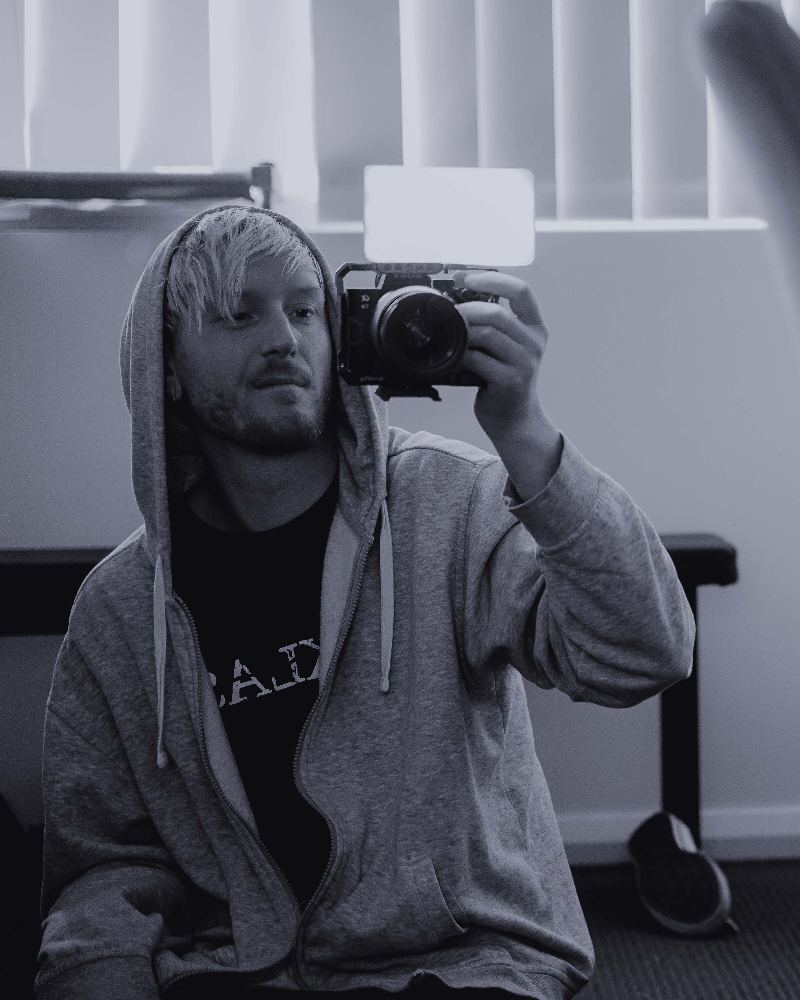

Hi, I’m Blake Curby — a creative problem solver based in Sydney. I studied at Billy Blue College of Design and have been telling visual stories through photo and video for over a decade. My work has taken me across Australia and overseas, capturing everything from live music to weddings and commercial projects.